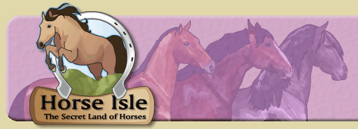

Logged in as: RuinGuard  |     |

|  | |
||
|
|||
|
| SUPPORT (11 topics) | BUGS (14 topics) | GENERAL (25 topics) | HORSES (8 topics) | GAME (88 topics) |
Players whisper to find wild horses not released horses. They do tend to be a bit angry when they spend $50,000 to whisper a wild of a breed they want only to find out it was released. Released horses will remain in the game for 1 real time hour then auto-delete. So for those of you who release to return the horse to the wild. You are deleting the horse, or if another catches it the horse will probably be pawned, where at least it goes to another land to run wild and free. If you are going to release it's nice to let others know you are going to release a specific breed. (Ads chat please.) :) That way others know not to whisper that breed for a while. |
Just capture it and pawn it, you get some money. It's always nice to let people know you are releasing breed ______. It is Not against the rules to release horses, players may do so if they wish to. They also do not Have to announce it. So if you find you whispered a released horse, just pawn it and get some money if you don't want the horse. If you are whispering for a specific breed then you got that breed whether or not it's been captured before, it's the breed you were looking for. If you are just going down the list to whisper to pawn, then same thing...You got the horse, pawn it. Please do not harass others because they released a horse. :) |
 |
 |